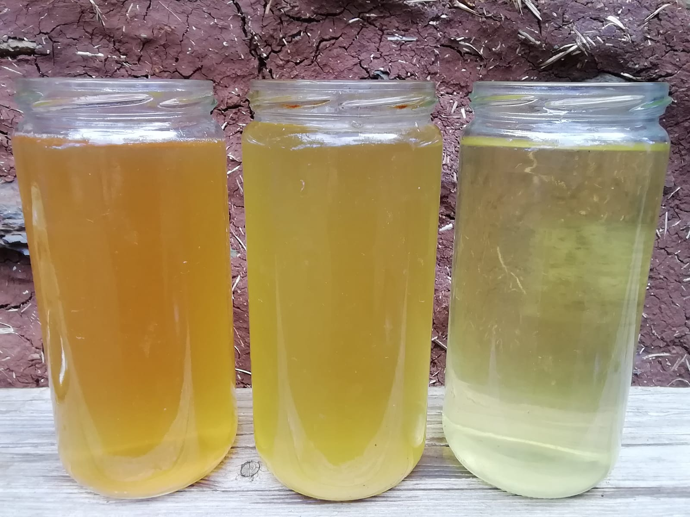

Unterstütze deine Selbstheilungskräfte & deine Verjüngung!
Mit all diesen täglichen, einfachen Therapievorschlägen, arbeiten wir seit Jahren mit positivem Energiegewinn...
- Verzichte auf Kontakt mit Chemikalien (nicht-natürliche Substanzen) auf jegliche Art & Weise...
- Verschiedene Alternativen der Yoga-Philosophie...

Zungenreinigung nach Ayurveda 🕉️
Befreit deine Zunge von Belegen & Schleim, verbessert deinen Atem & die Sauerstoffinhalation.
Beseitigt Bakterien/Parasiten, ist verjüngend etc...
Nasenspülungen nach Ayurveda 🕉️ (Neti)
Linderungstherapie bei Nasennebenhöhlenreinigung mit der Neti-Kanne.
Verstopfte Nase/Nasenbeschwerden effektiv behandeln, Tiefenatmung unterstützen.
Allergieerreger, Bakterien & Parasiten minimieren uvm.
alternative Zahnpasta
Eine Mischung aus Mineralien und weiteren Zusätzen (Zeolith, Heilerde, Natron, Birkenzucker, Steinsalz, Kurkuma)
Eigen-Urin-Therapie
Diese kann ich jedem empfehlen, der gesund bleiben möchte oder eine Disharmonie in seiner Körper-Energie verspürt. Selbst praktiziere ich diese vielseitige Therapie seit mehreren Jahren, aufgrund neurologischer Erkrankungen (multiple Chemikalien Allergie, Elektrosensibilität) an mir & gebe gern meine Heil-Erfahrungen weiter. Seminarempfehlung (Dr. W. Morkeaw. com/Thail.)
Durch die tägliche Eigen-Urin Praxis kann ich nun meine Körpersprache besser verstehen, meinen Körper Geschmack & Geruch wahrnehmen, was auf ein gewisses Maß an Rücksicht & Selbstliebe führt. Dadurch kann ich leichter negative Gewohnheiten (Selbstzerstörungs-Programme) erkennen & beheben.
Körpereigener Urin ist ein Erste-Hilfe-Mittel. Es bringt den Körper wieder in die Balance, stabilisiert, hilft ihm seine Selbstheilung zu aktivieren, zB. in einem Notfall. Der nächtliche/frühmorgendliche Mittelstrahl Urin (ca. 4 - 9Uhr) ist am Effektivsten. Da der Körper sich in der Selbstheilung befindet, ist der Mittelstrahl der Reinste. Täglich Oral eingenommen, ca. 30 - 50ml, wirkt unser Eigenurin (Mittelstrahl) wie eine Impfung. Pur, oder mit Wasser verdünnt, oder potentiert mit gereinigtem Wasser verschüttelt. (siehe Dr. Dietrich Klinghardt - Protokoll).
Die Eigen-Urin-Therapie unterstützt das Immunsystem bei jeglichen Arten von Schmerzen, Allergien, Krebs und unterstützt die Heilung von neurologischen Erkrankungen uvm...
Optimal ist eine vegetarische/vegane, vorwiegend rohe, lebendig/natürliche Ernährung, ohne chemische/synthetische verarbeitete Zusätze.
An unserem Urin-Geschmack können wir Körper-Probleme, aber auch falsche Lebensmittel, Gewohnheiten & Lebensweisen erkennen lernen.
URIN-GESCHMACK
| süßer/sauer | = | Leber |
| herber | = | Muskel |
| salzig | = | Nieren |
| bitter | = | Herz |
Wasser oder Grüntee-artiger Geschmack, ist ein Zeichen von Hamonie/Gesundheit!
Anhand der Farbe können wir leicht erkennen, in welchem Zustand unser Körper sich befindet, ob wir zu wenig Flüssigkeit zu uns genommen haben oder wie stark die Nieren arbeiten müssen. Am Geruch können wir erkennen, was wir gegessen haben.
Weitere alternative Einsatz-Möglichkeiten, vom täglichem frischen Körper-eigenem-Urin:
- Detox/Einläufe mit frischem gesammelte Urin, auf Körpertemperatur erhitzt.
(Pipi-Topf, mit Finger Check). - Gurgel & Mundspülung bei empfindlichen Zähnen & Zahnfleisch, Zahnstein.
pH Regulierung zb. nach Zucker/Saurem. - Nasen Spülungen mit einer Ayurvedischen Netikanne/Nasendusche.
- Augen Tropfen/Tauch Muschel (nur frischer warmer Urin!)
- Ohren Tropfen bei Schmerzen/Entzündungen (nur warm bzw. erhitzt)
- Haut-Jucken, Pusteln, Verletzungen, Reizungen, After-Reinigung
- Hautcreme/Gesichtscremen-Ersatz, nach Chlor Wasser Bad/Dusche um den pH Wert zu regulieren, macht den Körper basisch, weich/elastisch. (warme Luft/Sonnen Trocknung ergibt einen neutralen Geruch)
- Hand & Fußbad - Maniküre mit erhitztem Urin (beste Effekte wenn es erhitzt & sehr heiß genutzt wird & dadurch tiefer in die Hautschichten gelangt, vergleichbar mit einer Panchakarma Ölsalbung). Sehr schnelle Abkühlung.